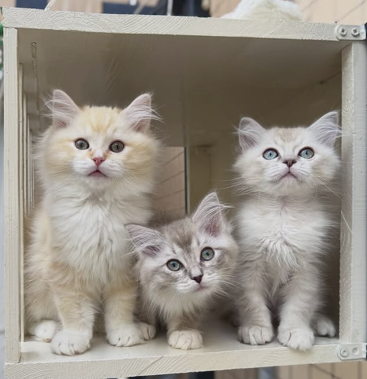
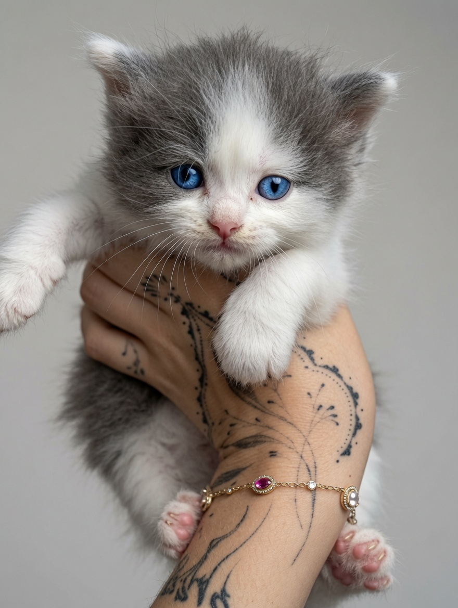
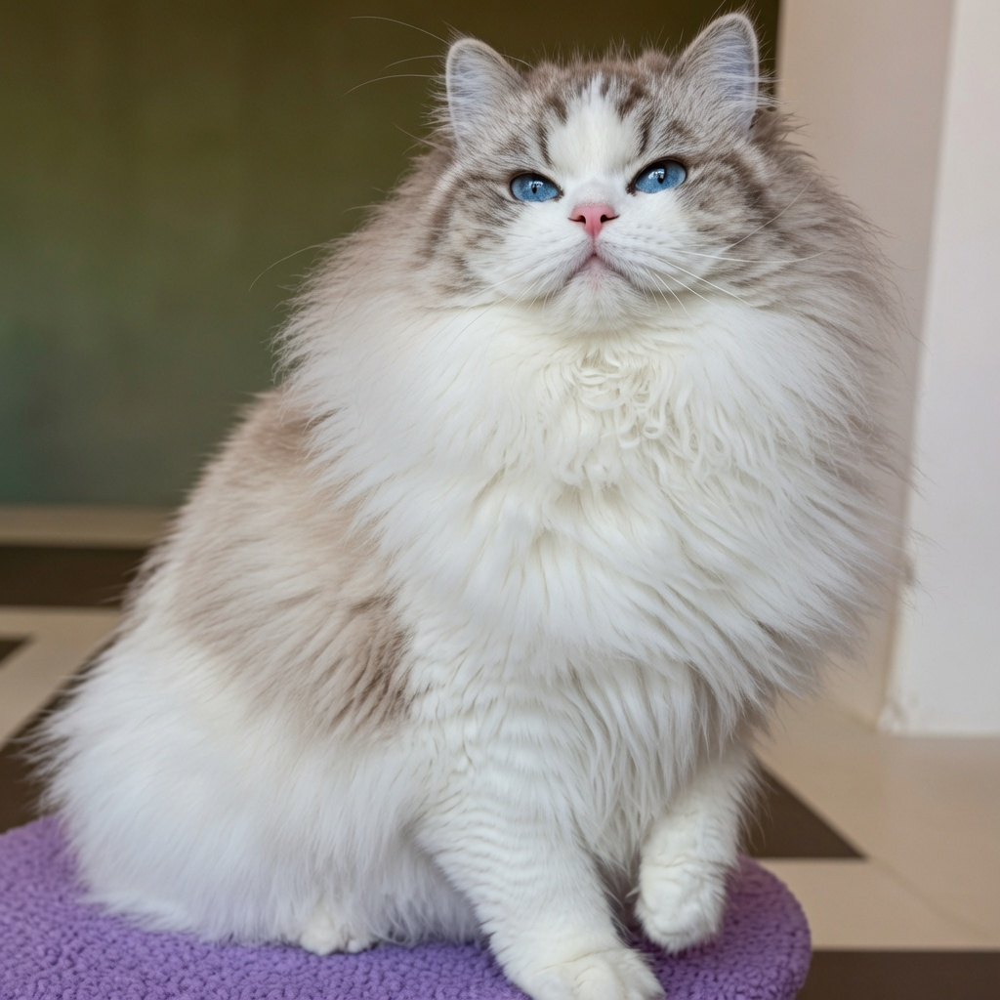
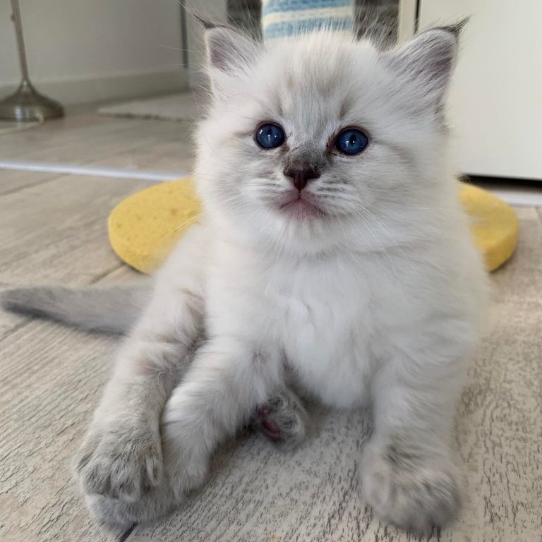
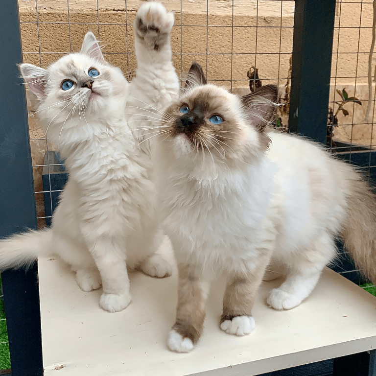
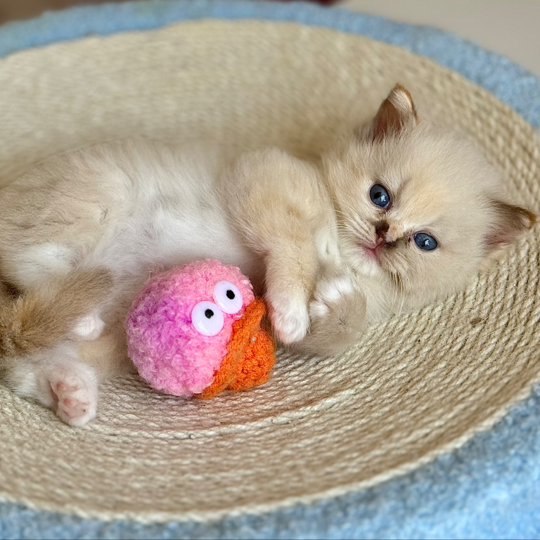

Élevage familial
Des chatons habitués à la vie quotidienne, aux humains et à un cadre rassurant.
Bienvenue à la Chatterie Berceau Étoilé, un univers familial et bienveillant dédié au Ragdoll, où chaque chaton grandit entouré d’attention, de tendresse et d’un vrai accompagnement.

La Chatterie Berceau Étoilé place le bien-être, la santé et la socialisation au cœur de son élevage. Les chats vivent au sein du foyer, dans un environnement pensé pour leur équilibre et leur épanouissement.
Lire notre histoireDes chatons habitués à la vie quotidienne, aux humains et à un cadre rassurant.
Une attention portée à la santé, aux tests, à la croissance et au départ des chatons.
Chaque famille est guidée avant, pendant et après l’adoption de son chaton.
Suivez les portées de la chatterie, découvrez les chatons disponibles et laissez-vous guider vers le compagnon qui correspondra le mieux à votre foyer.

DisponibleDécouvrez les chatons actuellement proposés à l’adoption, leur caractère, leur évolution, leurs parents et leur statut de réservation.
Voir les chatonsUne galerie douce pour retrouver les anciens bébés de la chatterie et leur évolution dans leurs familles.
Photos, nouvelles, croissance, socialisation et informations importantes jusqu’au départ du chaton.

Le Ragdoll est apprécié pour sa douceur, sa présence apaisante et son lien très fort avec l’humain. C’est un chat proche de sa famille, sensible, affectueux et idéal pour un foyer qui souhaite créer une vraie relation avec son compagnon.
Un tempérament calme, tendre et proche de l’humain.
Un chat qui aime la présence, les habitudes et la vie de maison.
De nombreuses robes et variétés à découvrir avec douceur.
Adopter un chaton est une belle décision qui mérite du temps, des échanges et un accompagnement sérieux. La chatterie guide chaque famille étape par étape.
Présentation de votre projet d’adoption, de votre foyer et de vos attentes.
Discussion autour du caractère recherché, du mode de vie et du chaton adapté.
Une fois le choix confirmé, la réservation permet de sécuriser l’adoption.
Le chaton rejoint sa famille avec ses documents, ses repères et un suivi.
Vous souhaitez comprendre les conditions d’adoption, les délais, les documents fournis ou le fonctionnement de la liste d’attente ?
Voir les modalitésChaque espace de la chatterie est imaginé pour offrir aux chats un environnement calme, stimulant et sécurisant. L’objectif est de voir grandir des chatons confiants, équilibrés et habitués à la vie de famille.



Pour une demande d’adoption, une question sur une portée ou simplement pour découvrir davantage l’univers de la Chatterie Berceau Étoilé, vous pouvez nous écrire.